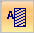

Bolt command bar
- Material
-
Specifies a different material for the bolt connectors than is used in the parts they connect. The default material is derived from the bolt, if it is defined.
- Bolt Selection Type
-
Specifies the creation method for the connector. This aids in selecting elements in the model.
 Hole
Hole-
Specifies that you want to select one or more holes. This is the default selection method.
 Plane
Plane-
Selects all holes of the same diameter on the plane you select.
 Spider
Spider-
Creates a rigid spider element in each of the holes that the connector passes through. This option is not available when the selected holes are in a sheet metal surface.
A spider symbol consists of a single central node connected to n number of nodes. A spider is made up of rigid elements. The spider is only shown in the Simulation Results environment. Conceptually, a spider looks similar to this:

For more examples, see Bolt connector simulation results.
 Multiple Bolts
Multiple Bolts-
Specifies that one bolt connector object is created in the Simulation pane to represent all of the bolts. This makes it possible to edit all bolts at once.
When cleared, creates one bolt connector object in the Simulation pane for each bolt connector.

Threading-
Specifies hole type. All Solid Edge hole types, thread types, and cylindrical cutouts are supported.
- Automatic
-
Automatically detects the hole or bolt type.
- Threaded
-
Specifies threaded (tight fit or press fit) hole features and bolts, threaded counterbore holes, and threaded cylindrical cutouts.
- Loose Fit
-
Specifies a bolt diameter that is smaller than the hole.
 Symbol Color
Symbol Color-
Displays the Color dialog box so you can change the default assembly connector symbol color displayed in the graphics window.
Click a color box to select a predefined color, or click New to define a custom color.
The color is applied to existing symbols and to new connection symbols.
 Show Label
Show Label-
Shows or hides the assembly connector value label in the graphics window.
This option is not available for edge connectors.
How do I
Create connectors based on assembly relationshipsCreate assembly connectors using the Auto command
Create manual connections between faces or surfaces
Replace target and source connection regions
Change connector region direction
Create bolted connections
Edit a bolt connector
Learn more
Assembly connectorsTarget and source connector regions
Assembly connector handles, labels, and symbols
Glue and no penetration contact connectors
Thermal connectors
Bolt connectors
Bolt connector simulation results
Look up more details
Auto command barAssembly Connector command bar
Assembly Connector Properties dialog box